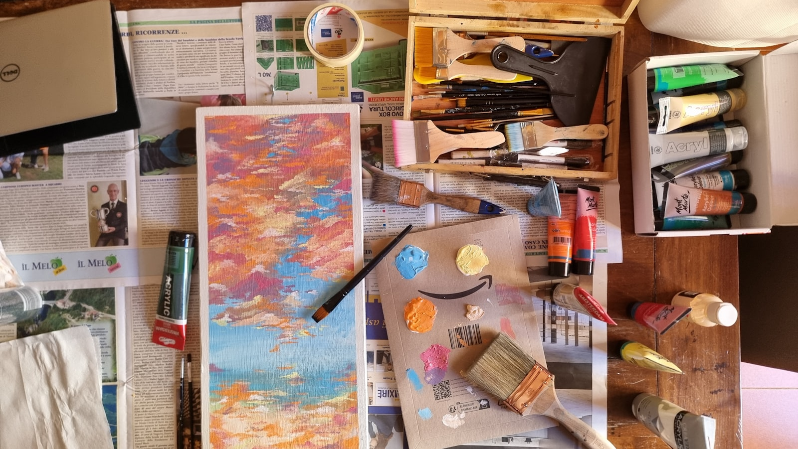
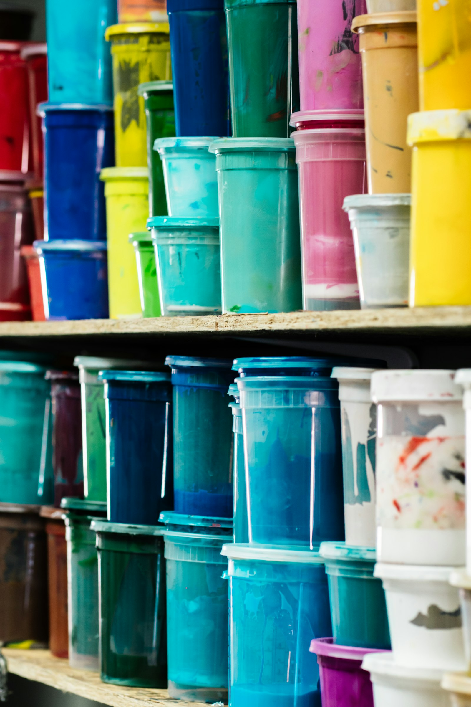

Week 1 • Matisse
Color Lab / Color & Joy
Color theory, giant painted wheels, shape collage, pattern design, collaborative mural, and wearable art.

Week 2 • O'Keeffe
Nature Lab / Nature & Texture
Observational drawing, flowers up close, texture rubbings, leaf impressions, mobiles, and driftwood sculptures.

Week 3 • Basquiat
Street Art / Self Expression
Graffiti lettering, symbolism, cityscapes, poetry posters, layering, and giant collaborative wall work.

Week 4 • Dali
Invention Lab / Dreams & Surrealism
Dream journals, surreal self portraits, clay creatures, fantasy room boxes, transformed objects, and puppet theater.

Week 5 • Picasso
The Big Art Studio
Abstract faces, cardboard engineering, giant collaborative canvas, choice-day making, and exhibition design.